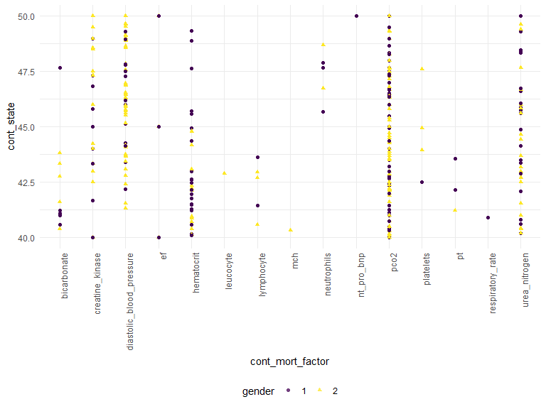
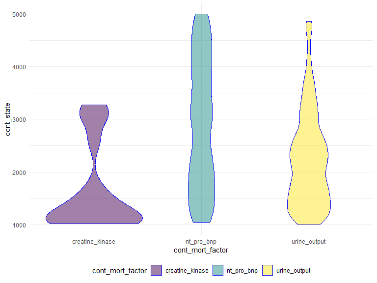
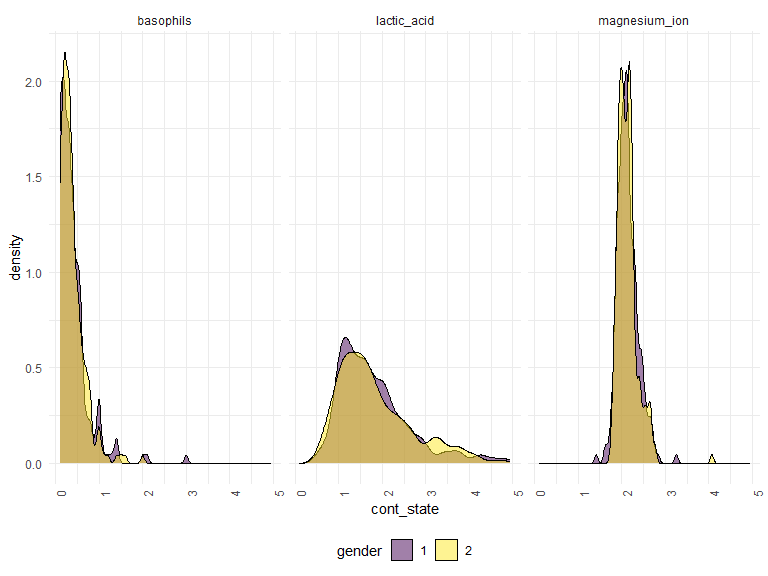
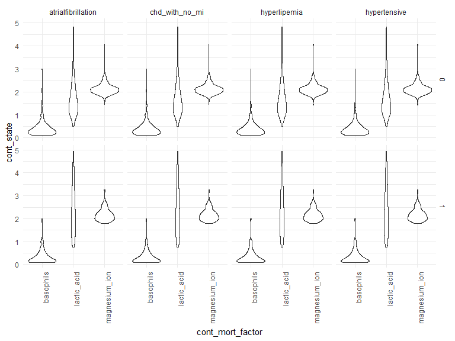

Yangyang Chen 2023-12-04
mort_df =
read_csv("data/data01.csv") |>
janitor::clean_names() |>
drop_na() |>
pivot_longer(
hypertensive:copd,
names_to = "bi_mort_factor",
values_to = "bi_state"
) |>
pivot_longer(
heart_rate:ef,
names_to = "cont_mort_factor",
values_to = "cont_state"
) |>
rename(gender = gendera) |>
mutate(
bi_state = as.factor(bi_state),
gender = as.factor(gender)) |>
arrange(id) |>
group_by(group)## Rows: 1177 Columns: 51
## ── Column specification ──────────────────────────────────────────────────────
## Delimiter: ","
## dbl (51): group, ID, outcome, age, gendera, BMI, hypertensive, atrialfibrill...
##
## ℹ Use `spec()` to retrieve the full column specification for this data.
## ℹ Specify the column types or set `show_col_types = FALSE` to quiet this message.We could observe continuous mortality factor’s highest and lowest values in each gender by fixing abnormal range:
mort_df |>
filter(cont_state >= 40, cont_state <= 50) |>
ggplot(aes(x = cont_mort_factor, y = cont_state, color = gender, shape = gender)) +
geom_point(alpha = .75) +
theme(axis.text.x = element_text(angle = 90, hjust = 1))
Three highest continuous mortality factor in a fixed range
mort_df |>
filter(cont_mort_factor %in% c("creatine_kinase", "nt_pro_bnp", "urine_output")) |>
filter(cont_state >= 1000, cont_state <= 5000) |>
mutate(cont_mort_factor = forcats::fct_relevel(cont_mort_factor)) |>
ggplot(aes(x = cont_mort_factor, y = cont_state)) +
geom_violin(aes(fill = cont_mort_factor), color = "blue", alpha = .5) 
mort_df |>
filter(cont_mort_factor %in% c("lactic_acid", "magnesium_ion", "basophils")) |>
filter(cont_state >= 0, cont_state <= 5) |>
select(cont_mort_factor, cont_state, gender) |>
ggplot(aes(x = cont_state, fill = gender)) +
geom_density(alpha = .5) +
facet_grid(~cont_mort_factor) +
viridis::scale_fill_viridis(discrete = TRUE) +
theme(axis.text.x = element_text(angle = 90, hjust = 1))## Adding missing grouping variables: `group`
mort_df |>
filter(cont_mort_factor %in% c("lactic_acid", "magnesium_ion", "basophils")) |>
filter(cont_state >= 0, cont_state <= 5) |>
filter(bi_mort_factor %in% c("hyperlipemia", "hypertensive", "atrialfibrillation", "chd_with_no_mi")) |>
select(outcome, bi_mort_factor, bi_state, cont_mort_factor, cont_state) |>
ggplot(aes(x = cont_mort_factor, y = cont_state)) +
geom_violin() +
facet_grid(outcome ~ bi_mort_factor)+
theme(axis.text.x = element_text(angle = 90, hjust = 1))## Adding missing grouping variables: `group`